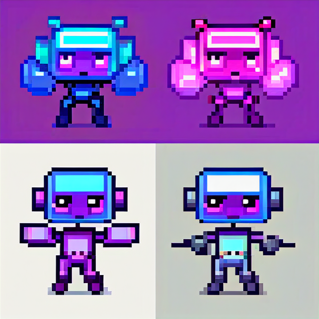
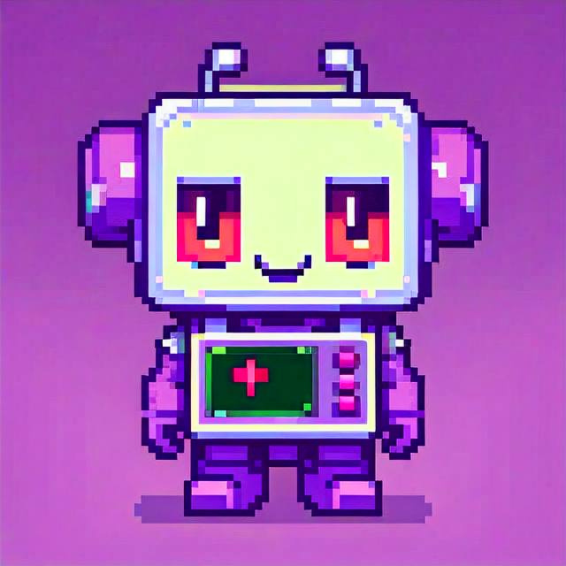
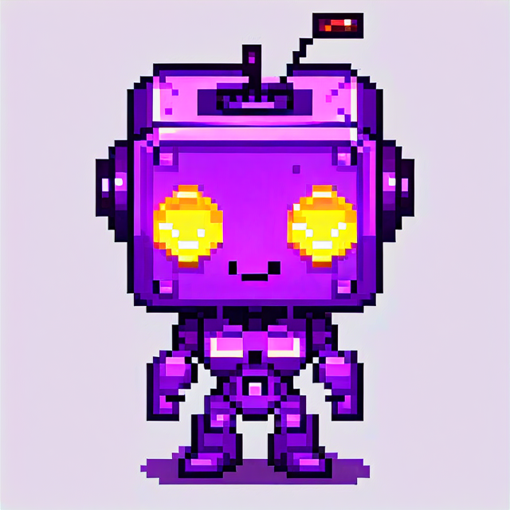
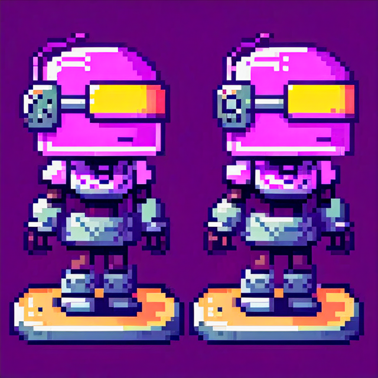
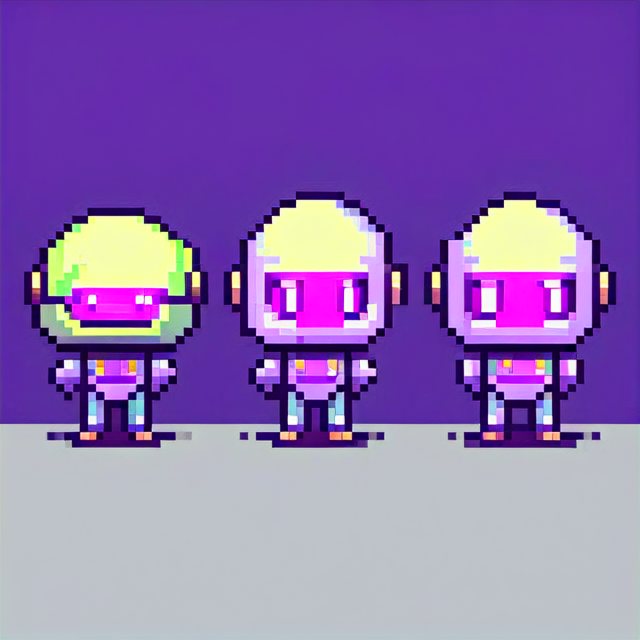
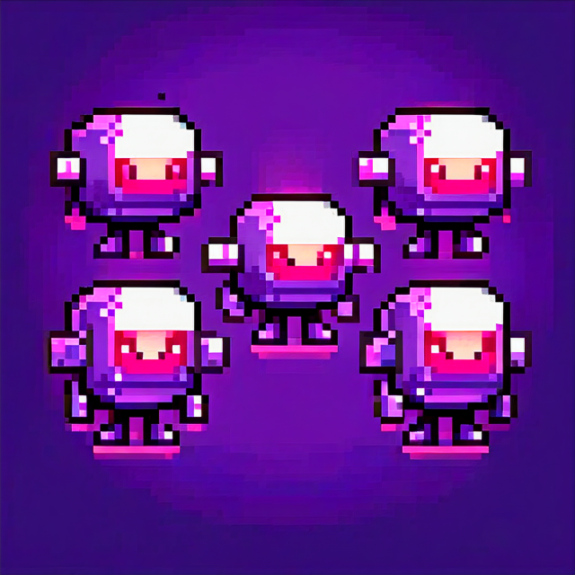
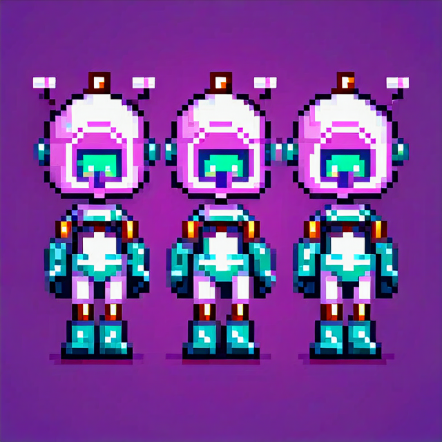
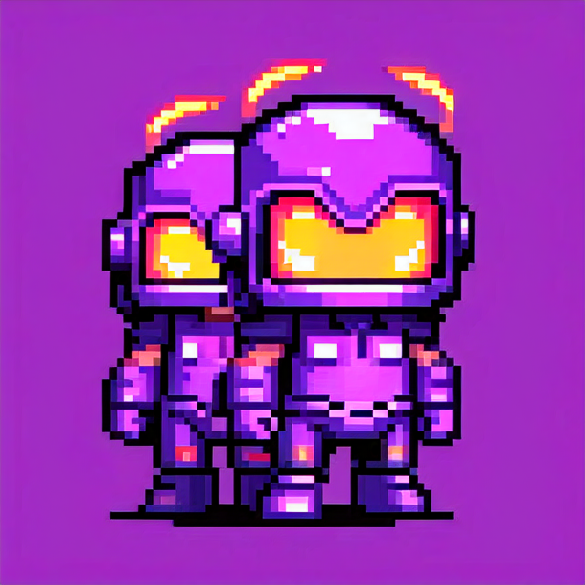
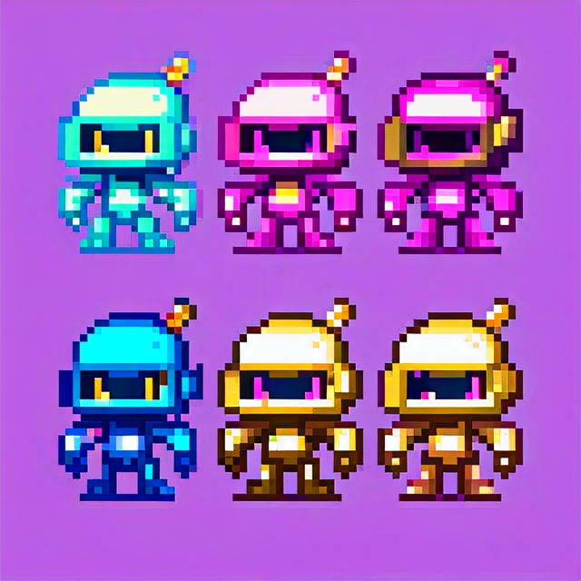

第三轮：固定你爱的造型 + 「智能体」隐喻
造型锚点：三只横排、大头方屏 visor、头顶单天线、侧耳、短手短脚、高饱和紫底。
文件：agent_logo_01.png … agent_logo_10.png · 脚本：scripts/generate_logo_agent_concept_batch.py
- 01 visor 间像素连线 — 多智能体编排 / 图网络
- 02 计算器·扳手·笔 — 工具型智能体
- 03 胸口小「运行」方标 — 自主执行任务
- 04 中间机向两侧发波 — 协调者 / 中控 agent
- 05 visor 偏对话泡感 — 对话式 LLM 智能体
- 06 头顶文档+放大镜 — 知识 / RAG 向
- 07 环绕小方块卫星 — 插件 / 工具链
- 08 左→右粒子流 — 工作流管道
- 09 背后六边形护盾线 — 护栏 / 可信
- 10 强调青 / 粉 / 金紫三套 visor — 「智能体小队」配色（贴近你的参考）

01 编排网络

02 工具调用

03 自主执行

04 协调中心

05 对话智能体
06 知识检索

07 插件卫星

08 流程管道

09 安全护栏

10 小队配色